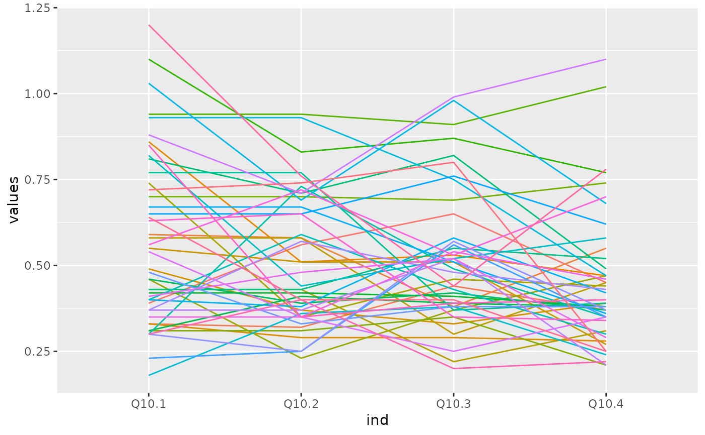

The data frame PHENYL records the level of Q10 at four different times for 46 patients diagnosed with phenylketonuria. The variable Q10.1 contains the level of Q10 measured in micromoles for the 46 patients. Q10.2, Q10.3, and Q10.4 are the values recorded at later times, respectively, for the 46 patients.
PHENYLA data frame with 46 observations on the following 4 variables:
Q10.1 (level of Q10 at time 1 in micromoles)
Q10.2 (level of Q10 at time 2 in micromoles)
Q10.3 (level of Q10 at time 3 in micromoles)
Q10.4 (level of Q10 at time 4 in micromoles)
Artuch, R., et. al. 2004. “Study of Antioxidant Status in Phenylketonuric Patients.” Clinical Biochemistry, 37: 198-203.
Phenylketonuria (PKU) is a genetic disorder that is characterized by an inability of the body to utilize the essential amino acid, phenylalanine. Research suggests patients with phenylketonuria have deficiencies in coenzyme Q10.
Ugarte, M. D., Militino, A. F., and Arnholt, A. T. 2015. Probability and Statistics with R, Second Edition. Chapman & Hall / CRC.
PL <- stack(PHENYL)
PL$sub <- factor(rep(1:46, 4))
ggplot(data = PL, aes(x= ind, y = values, group = sub, color = sub)) + geom_line() +
guides(color = FALSE)
#> Warning: `guides(<scale> = FALSE)` is deprecated. Please use `guides(<scale> = "none")` instead.

with(data = PHENYL,
t.test(Q10.1, conf.level = 0.99))
#>
#> One Sample t-test
#>
#> data: Q10.1
#> t = 15.629, df = 45, p-value < 2.2e-16
#> alternative hypothesis: true mean is not equal to 0
#> 99 percent confidence interval:
#> 0.4717314 0.6678339
#> sample estimates:
#> mean of x
#> 0.5697826
#>